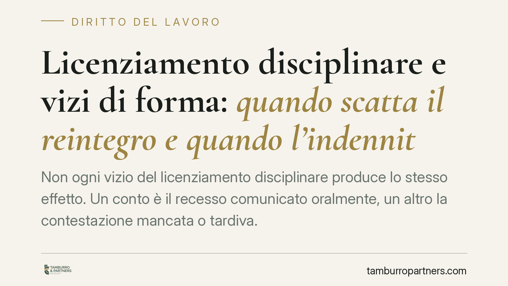

Licenziamento disciplinare e vizi di forma: quando scatta il reintegro e quando l'indennità
Non ogni vizio del licenziamento disciplinare produce lo stesso effetto. Un conto è il recesso comunicato oralmente, un altro la contestazione mancata o tardiva. La differenza non è di dettaglio: da essa dipende se il lavoratore ha diritto al reintegro o alla sola indennità economica, con regole diverse prima e dopo il 7 marzo 2015.

Il fatto
La distinzione tra forma del licenziamento e procedimento disciplinare continua a generare equivoci, anche perché viene spesso riassunta con la formula—imprecisa—secondo cui "senza lettera scatta il reintegro". La giurisprudenza di legittimità, in più arresti, ha chiarito che le conseguenze cambiano radicalmente a seconda del vizio concreto e del regime applicabile al rapporto.
Conviene quindi separare tre ipotesi che vengono erroneamente sovrapposte.
Inquadramento normativo
L'art. 7 della L. 300/1970 (Statuto dei lavoratori) impone al datore di lavoro, prima di irrogare una sanzione disciplinare, di contestare per iscritto l'addebito al dipendente e di consentirgli di difendersi. Non si tratta di un adempimento formale: è una garanzia sostanziale del diritto di difesa. La contestazione deve essere specifica (indicare con precisione i fatti) e tempestiva (non eccessivamente distante dai fatti noti al datore).
Il licenziamento, inoltre, deve essere comunicato per iscritto (art. 2, L. 604/1966). La forma scritta attiene alla validità stessa dell'atto, non al procedimento disciplinare.
Il regime sanzionatorio dipende poi dalla data di assunzione: per i rapporti sorti prima del 7 marzo 2015 opera l'art. 18 della L. 300/1970, come riscritto dalla L. 92/2012; per quelli successivi si applica il D.Lgs. 23/2015 (cosiddetto Jobs Act, tutele crescenti).
Le tre ipotesi da non confondere
a) Licenziamento orale (vizio di forma). Il recesso comunicato verbalmente, privo di forma scritta, è nullo/inefficace. In entrambi i regimi si applica la tutela reintegratoria piena: reintegro nel posto di lavoro e risarcimento commisurato alle retribuzioni perdute (art. 18, commi 1-2, L. 300/1970; art. 2 D.Lgs. 23/2015).
b) Mancanza totale di contestazione o insussistenza del fatto. Quando manca del tutto l'addebito, o il fatto contestato risulta insussistente, si incide sulla sostanza del provvedimento, non solo sulla procedura. In questi casi può operare la tutela reintegratoria—attenuata—prevista dall'art. 18, comma 4, L. 300/1970, e, nel regime del Jobs Act, l'art. 3, comma 2, D.Lgs. 23/2015 nei limiti dell'"insussistenza del fatto materiale".
c) Contestazione generica, tardiva o procedura irregolare. Qui il fatto esiste e il licenziamento è scritto, ma il procedimento presenta vizi. In regime di art. 18 (comma 6) ciò comporta, di norma, la sola tutela indennitaria. Nel regime delle tutele crescenti, l'art. 4 del D.Lgs. 23/2015 prevede per i vizi procedurali un'indennità tra 6 e 36 mensilità, senza reintegro.
È qui che si annida l'errore più diffuso: nel regime post-2015 un vizio meramente procedurale della contestazione, di regola, non produce reintegro.
Implicazioni pratiche
Per il lavoratore: prima di rivendicare il reintegro occorre qualificare correttamente il vizio. Un recesso orale e una contestazione tardiva conducono a tutele opposte.
Per il datore di lavoro: la cura del procedimento disciplinare resta decisiva. La specificità e la tempestività della contestazione non sono dettagli, ma condizioni che determinano l'esito di un eventuale contenzioso.
In entrambi i casi, la data di assunzione del lavoratore è il primo elemento da verificare, perché seleziona l'intero quadro sanzionatorio.
Cosa fare in concreto
- Verifica la data di assunzione: individua subito se si applica l'art. 18 L. 300/1970 o il D.Lgs. 23/2015.
- Qualifica il vizio: distingui tra forma del recesso (orale/scritto), assenza totale di contestazione, insussistenza del fatto e irregolarità procedurale.
- Rispetta i termini di decadenza: il licenziamento va impugnato entro 60 giorni dalla comunicazione, con atto scritto; entro i successivi 180 giorni va depositato il ricorso giudiziale o avviata la conciliazione/arbitrato (art. 6, L. 604/1966, come modificato dalla L. 183/2010).
- Raccogli la documentazione: lettera di contestazione, eventuale comunicazione di recesso, giustificazioni rese, prove della comunicazione.
- Valuta l'esito realistico: reintegro e indennità rispondono a presupposti diversi; una corretta qualificazione evita aspettative errate sulla tutela applicabile.
Disclaimer
Contributo informativo a cura di Tamburro & Partners - Avv. Giuseppe Tamburro. Non costituisce parere legale.
Ogni storia di lavoro ha i suoi tempi.
Se gestisci HR e vuoi un confronto su contenzioso, ispezioni o licenziamenti, scrivi allo studio. Ti rispondiamo entro un giorno lavorativo.